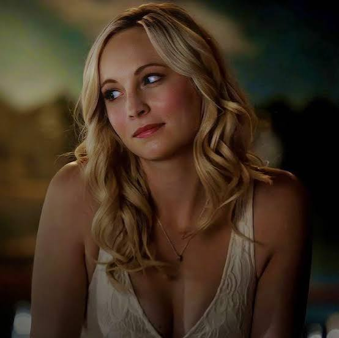
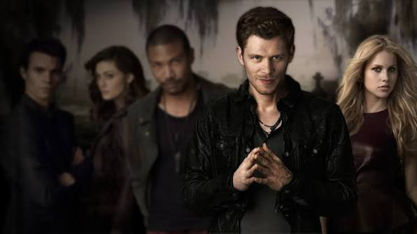

Elena Gilbert
Uma jovem que tenta seguir em frente após perdas importantes e acaba envolvida no mundo sobrenatural.
Amor, mistério, segredos e criaturas sobrenaturais. Algumas histórias nunca deixam de assombrar.
DESCUBRA ESSE UNIVERSOThe Vampire Diaries é uma série de drama, fantasia e romance que acompanha Elena Gilbert, uma jovem que vive na misteriosa cidade de Mystic Falls. Sua vida muda quando conhece os irmãos Stefan e Damon Salvatore, dois vampiros com personalidades e histórias muito diferentes.
Ao longo da história, segredos antigos são revelados, amizades são colocadas à prova e o mundo sobrenatural passa a fazer parte da vida dos moradores da cidade.
Uma jovem que tenta seguir em frente após perdas importantes e acaba envolvida no mundo sobrenatural.
Um vampiro sarcástico e imprevisível, que esconde sentimentos por trás de sua personalidade provocadora.
Um vampiro que busca controlar seus impulsos e preservar sua humanidade.
Uma bruxa poderosa e leal, que descobre a importância de sua família e de seus dons.

Uma personagem determinada, que passa por grandes transformações ao longo da série.
Misteriosa e estratégica, é uma personagem que sabe como surpreender quem está ao seu redor.

Uma relação marcada por conflitos, escolhas difíceis e sentimentos que mudam ao longo da história.

Uma conexão que começa com um encontro inesperado e se desenvolve em meio a segredos e desafios.

Uma relação que conecta personagens de diferentes histórias do universo sobrenatural.

Mystic Falls é o cenário principal de The Vampire Diaries. Por trás de sua aparência tranquila, a cidade guarda uma longa história de acontecimentos sobrenaturais, famílias antigas e mistérios que influenciam a vida de seus moradores.
Seres sobrenaturais que possuem habilidades especiais e uma história ligada à cidade.
Indivíduos que utilizam a magia e mantêm tradições passadas entre gerações.
Seres que carregam uma maldição ligada à transformação e à lua cheia.
Criaturas que reúnem características de mais de uma espécie sobrenatural.


A série que apresenta Mystic Falls, os irmãos Salvatore e os personagens que dão início a esse universo sobrenatural.

O spin-off acompanha a família Mikaelson em Nova Orleans, explorando o passado dos vampiros Originais e suas disputas por poder.
A história acompanha jovens sobrenaturais na Escola Salvatore, onde aprendem a lidar com seus poderes e descobrem novos desafios.